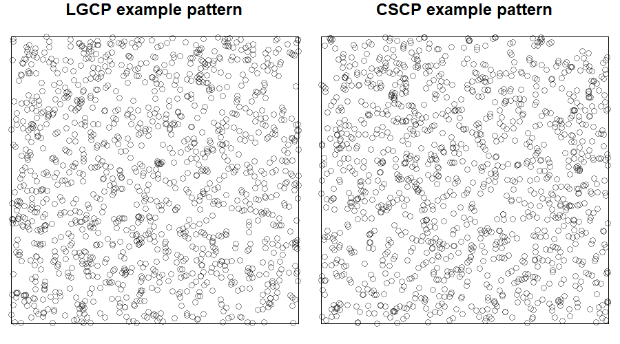
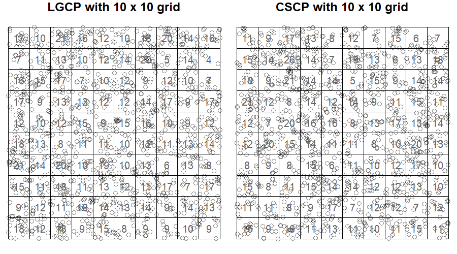
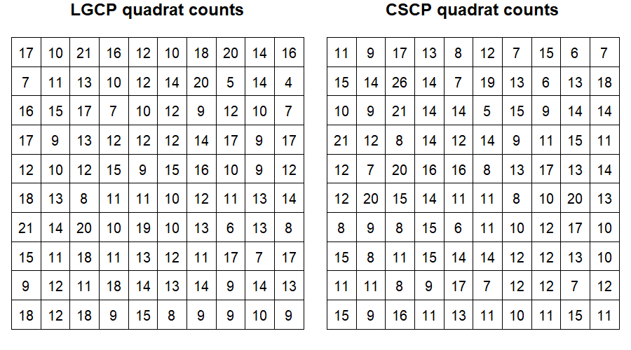
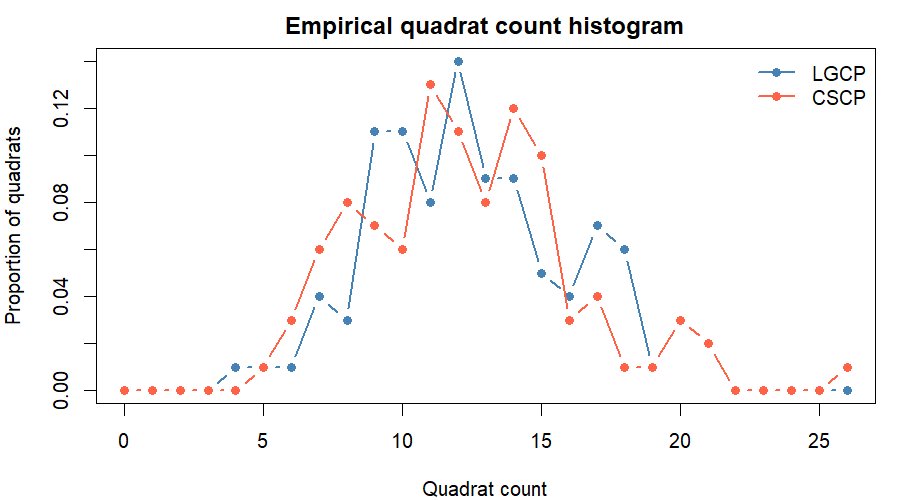
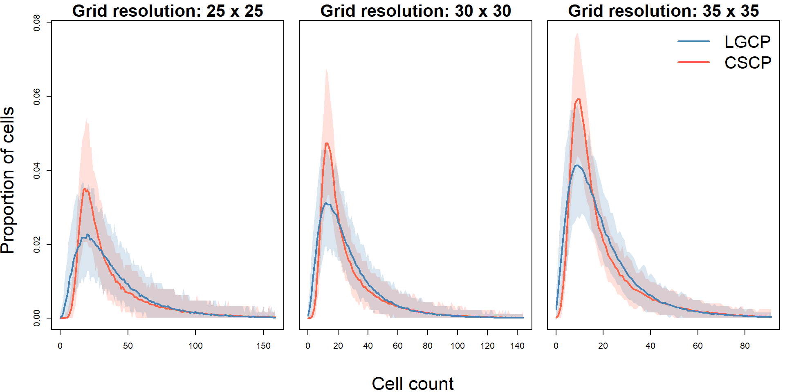
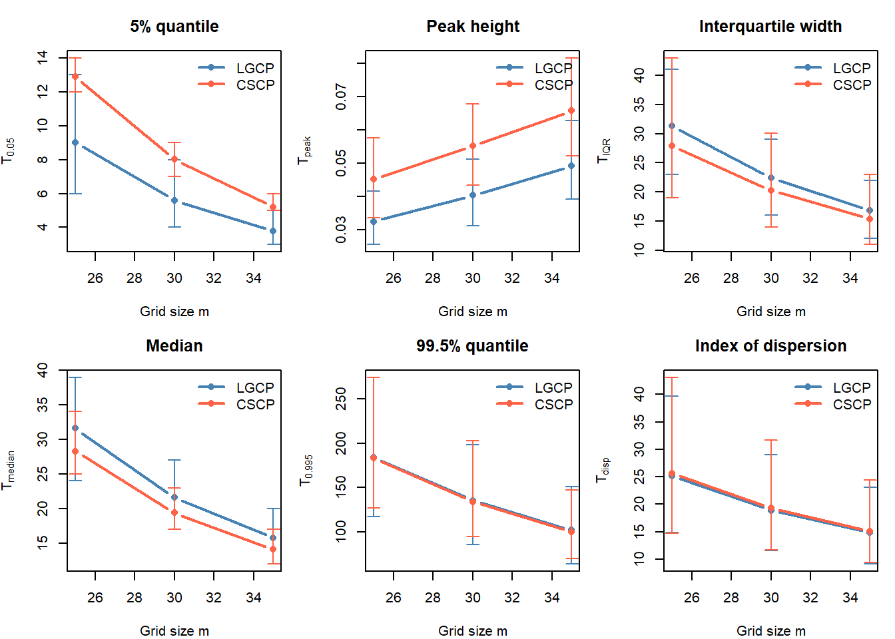

W <- spatstat.geom::owin(c(0, 1), c(0, 1))
quad_study <- run_quadrat_count_study(
W = W,
lambda = 25000,
phi = 1,
s_cscp = 0.1,
grids = c(25, 30, 35),
n_sims = 200,
seed = 123
)46 Quadrats 1
46.1 Motivation
The previous section showed that kernel reconstruction is not an effective way to recover the marginal differences between LGCP and CSCP models. Although the two models have different theoretical marginal distributions for the latent intensity field, these differences are heavily blurred once we:
- Observe only a Poisson realisation of the process
- Reconstruct the intensity surface by kernel smoothing
- Treat the resulting pixel values as a proxy sample from the marginal.
Instead of estimating the entire latent surface, we will instead seek summaries of which:
Are computed directly from the observed point pattern.
Retain information about the marginal intensity distribution in a form that can be used for statistical inference.
Quadrat counts provide a natural candidate for such summaries.
46.2 Why quadrat counts?
For a small region \(B \subseteq W\), the number of observed points in \(B\) satisfies
\[ N(B) \mid \Lambda \sim \text{Poisson}\left(\int_B \Lambda(u)\,du\right) \]
So we can think of a quadrat count as a direct, but noisy measurement of the local average intensity over that region.
Note
When we state:
“a noisy measurement of the local average intensity”
what we precisely mean is that, if \(N(B)\) is the random variable of quadrat count for a quadrat \(B\), then
\[ \frac{N(B)}{} \approx \frac{}{|B|}\int_{B} \Lambda(u)\ du \]
and this approximation becomes more accurate as the expected count in \(B\) increases.
Or even more simply…
This is important for two reasons.
Firstly, quadrat counts are obtained directly from the observed point pattern, without first reconstructing the full two-dimensional intensity surface.
Secondly, if LGCP and CSCP models differ in how often the latent intensity is very small or very large (i.e. the marginal distributions), then these differences may also appear in the distribution of counts across small quadrats. In other words, quadrat counts do not recover the pointwise marginal distribution of \(\Lambda(u)\) exactly, but may retain some aspects of the difference in behaviour of the latent intensity in a more directly observable form.
Note
“…but may retain some aspects of the difference in behaviour of the latent intensity in a more directly observable form.”
Maybe need to justify this statement better?
As we will see in future sections, quadrat counts are particularly convenient for simulation-based inference, as their distribution under a given model can be approximated directly via Monte Carlo simulation. So the lack of closed-form distribution is not a complete failure.
46.3 Aim of this section
The goal is not to estimate model parameters, or to construct a formal hypothesis test, but instead to assess whether observable summaries contain enough information to distinguish between the two models in practice.
So in this sense, the objective here is not estimation, but detectability: to determine whether the differences in marginal intensity distributions leave a measurable signal in observable quantities.
46.4 Quadrat-based Count Summaries
Alongside the entire histogram of quadrat counts, we will construct a set of statistics designed to capture different aspects of the quadrat count distribution, so we might better understand where the empirical differences lie.
Let \(N_1, \dots, N_J\) denote the quadrat counts.
5% quantile
The lower quantile measures the behaviour of the left tail of the quadrat count distribution. This is relevant because the CSCP intensity is bounded away from zero, whereas the LGCP can generate arbitrarily small intensities.
Peak height
The peak height measures how concentrated the count distribution is around its most common value. A sharper peak indicates that more quadrats have similar counts, while a lower peak indicates a more diffuse count distribution.
Interquartile width
The interquartile width measures the spread of the central 50% of quadrat counts. This provides a robust measure of variability that is less sensitive to extreme cells than the full range or upper quantiles.
Median
The median captures the typical quadrat count. Comparing medians helps determine whether differences between the models are driven only by tails, or whether the centre of the count distribution also shifts.
99.5% quantile
The upper quantile targets the extreme right tail of the quadrat count distribution. This is relevant because the LGCP marginal distribution has a heavier upper tail than the CSCP marginal distribution.
Index of dispersion
The index of dispersion, defined as the sample variance divided by the sample mean, measures overdispersion relative to a Poisson process. Since both models are Cox processes, both are expected to be overdispersed, but differences in this quantity may reveal differences in the strength or form of local clustering.
These statistics target complementary aspects of the count distribution: tail behaviour, central spread, shape, and dispersion.
Note
Maybe still seems like a bit of a jumble of statistics chosen? But I feel like I have justified each one enough? Maybe not though.
46.5 Expected behaviour
Based on the theoretical marginal distributions, we expect the LGCP to produce more very small and very large local intensities, while the CSCP should produce a more sharply constrained lower tail and a lighter extreme upper tail. If these features survive the Poisson observation step and spatial averaging over quadrats, then they should appear as differences in the lower quantiles, upper quantiles, peak height, and spread of the quadrat count distribution.
Note
Not sure about this subsection. I thought it might be nice to has a sort of hypothesis before seeing the actual results, to make them seem a little more grounded if that makes sense?
If this does stay, I think it could be improved a little.
46.6 Simulation procedure
For fixed \((\lambda, \phi, s)\), we approximate the distribution of the diagnostic statistics under each model using Monte Carlo simulation.
The procedure is as follows:
Match the LGCP scale parameter to the CSCP scale parameter.
Simulate independent realisations from both LGCP and CSCP under the matched parameter setting.
For each grid resolution, compute quadrat counts.
From these counts, compute the diagnostic statistics defined above.
Repeat over many Monte Carlo replicates.
Note
You can see the code used here
Example of the procedure




46.7 Initial investigation
We begin by investigating whether quadrat summaries reveal any systematic differences between the LGCP and CSCP.
We will be running the study with the following settings:
\(\lambda = 25000\)
\(\phi = 1\)
\(s_{\text{CSCP}} = 0.1\) (best-matching LGCP has \(s_{\text{LGCP}} = 0.0625\))
\(n_\text{sims} = 200\)
Grid sizes of \(\{25, 30, 35\}\)
\(W = [0, 1] \times [0, 1]\)
These parameter settings are chosen to represent a regime where clustering is clearly present (\(\phi = 1\)), and where the expected number of points is sufficiently large (\(\lambda = 25000\)) to ensure that quadrat counts are informative across a range of grid resolutions. The chosen scales correspond to previously matched second-order structure, ensuring that any observed differences are not driven by mismatched spatial dependence.
The effect of model and hyper parameters are explored in the following sections.
Note
Part of me feels that I should only really be using a single grid resolution here.
Then this sections would be “the differences of the marginals CAN be preserved by quadrat counts”, and next would look at how the tuning effects this preservation?
Running the study:
46.7.1 Histogram comparison
Below we plot the mean proportion of cells for each cell count, along side the central 95% quantile envelopes.

Observations:
As expected, the range of observed quadrat counts decreases as the grid is made finer. With smaller cells, each quadrat contains fewer points on average, so the count distribution shifts toward smaller values. The effect of grid resolution will be investigated more thoroughly in the following section.
The LGCP consistently places more mass on larger count values, while the CSCP exhibits a sharper decay in the upper tail, which mimics the behaivour we saw in the marginal PDF.
The CSCP exhibits fewer zero and near-zero counts. This reflects the fact that its latent intensity is bounded away from zero, making very low local averages less likely, even after Poisson sampling.
The CSCP exhibits a higher peak than the LGCP.
The far right tail behaivour is very similar between the two models.

Observations:
The 5% quantile is consistently larger for the CSCP than for the LGCP. This agrees with the histogram comparison: the LGCP produces more low-count quadrats, while the CSCP has a more restricted lower tail.
The peak height is larger for the CSCP across all grid resolutions. This indicates that the CSCP count distribution is more concentrated around its modal count, whereas the LGCP count distribution is more spread out.
The interquartile width and median are slightly larger for the LGCP. This suggests that, in the central part of the distribution, LGCP counts are more variable and shifted slightly upward.
The 99.5% quantile is very similar between the two models, with the LGCP only slightly larger. Thus, for these parameter settings, the extreme upper-tail difference is present but weak at the quadrat-count level.
The index of dispersion is nearly indistinguishable between the two models under these parameter settings.
46.8 Interpretation of results
The quadrat count distribution retains some of the marginal differences between the LGCP and CSCP, but not all diagnostic statistics are equally informative.
Under this parameter setting:
The clearest difference appears in the lower part of the count distribution. Across all grid resolutions, the LGCP has a smaller 5% quantile than the CSCP, indicating that it produces more low-count quadrats. This is consistent with the fact that the LGCP intensity can take values arbitrarily close to zero, whereas the shifted CSCP intensity has a lower-bound structure.
The CSCP also has a larger peak height, meaning that its count distribution is more concentrated around the modal count. In contrast, the LGCP distribution is more diffuse, with relatively more mass spread into both lower and higher count regions.
The upper-tail summaries show weaker separation. Although the LGCP has slightly larger 99.5% quantiles, the Monte Carlo intervals overlap substantially. This suggests that, under these settings, the upper-tail difference is not the most stable diagnostic on its own.
Finally, the index of dispersion is nearly identical between the two models. This shows that a broad overdispersion measure is too coarse to distinguish the processes here.
The useful signal is not simply that one process is more overdispersed, but rather that the two processes distribute their quadrat counts differently across the lower tail, centre, and upper tail.
46.9 Next section
The initial investigation suggests that quadrat counts do retain some model-specific information, especially in the lower tail and peak concentration of the count distribution. However, the strength of this signal may depend on the grid resolution and on the underlying parameter values.
We therefore next investigate how these diagnostics change as the grid resolution, intensity level, and clustering strength are varied.
Note
My main concern here is that the 5% quantile seems to be doing a lot of heavy lifting in recovering the distributional differences.
But if we considered the non-shifted CSCP, I don’t think the distinction would be as pronounced? I guess I’m wondering how I would justify someone asking,
“Why didn’t you use the non-shifted model? It is more flexible as it allows the latent intensity to drop all the way to zero, regardless of the clustering strength.”
Or something along those lines? And then they might say that if we were using the non-shifted version, the two processes might not be as distinguishable?
I will investigate the non-shifted version in the section we implement the actual hypothesis testing stuff, as I’m wondering if we will still be able to distinguish as well.